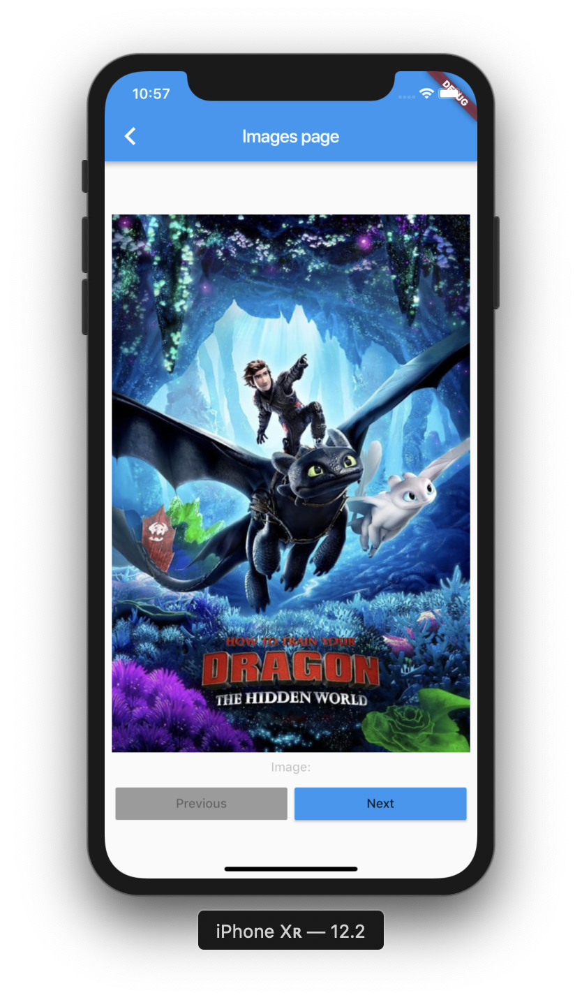
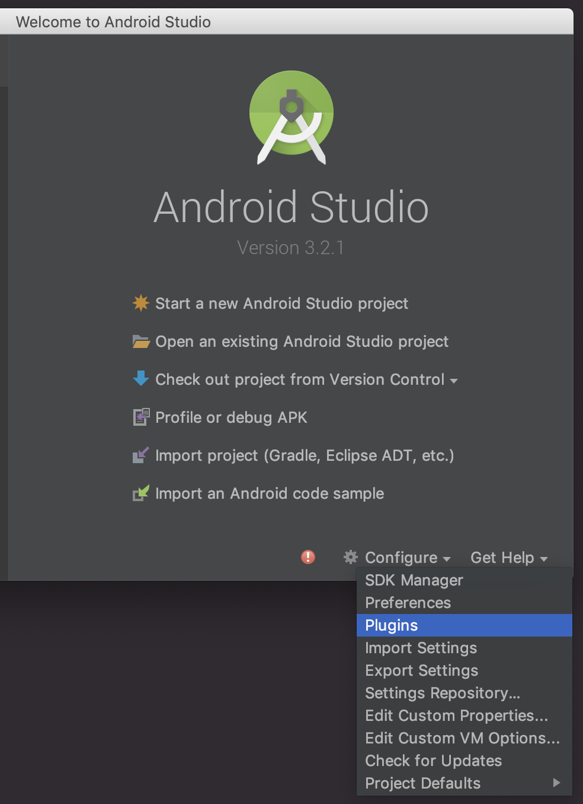
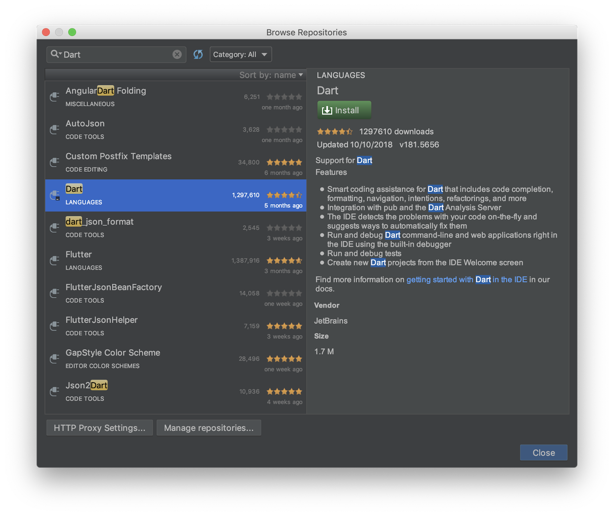
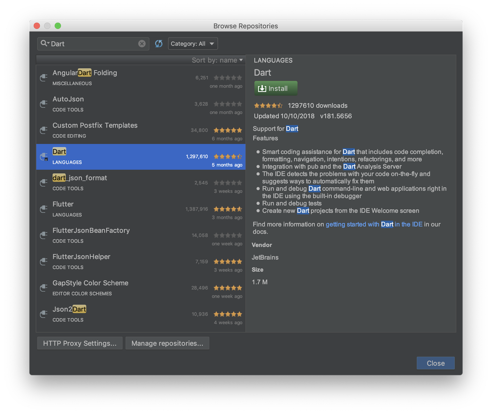
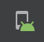
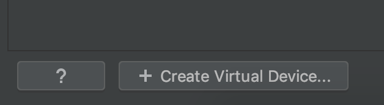
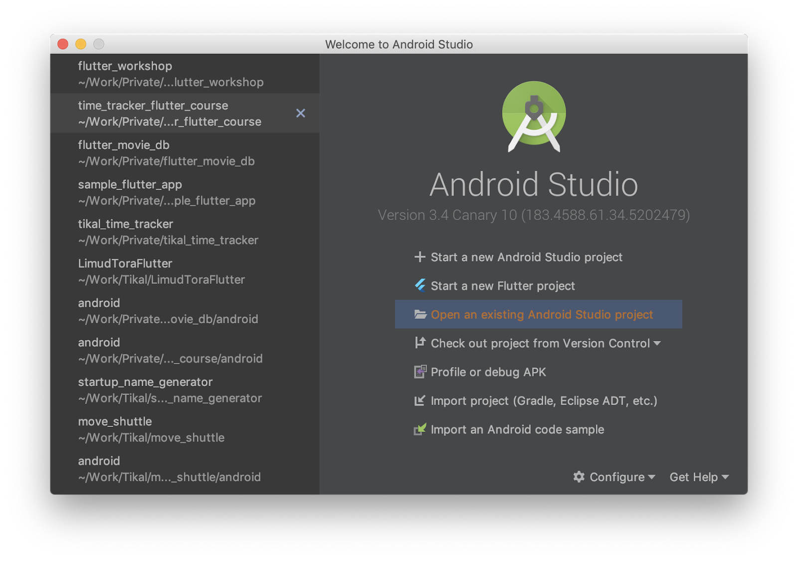
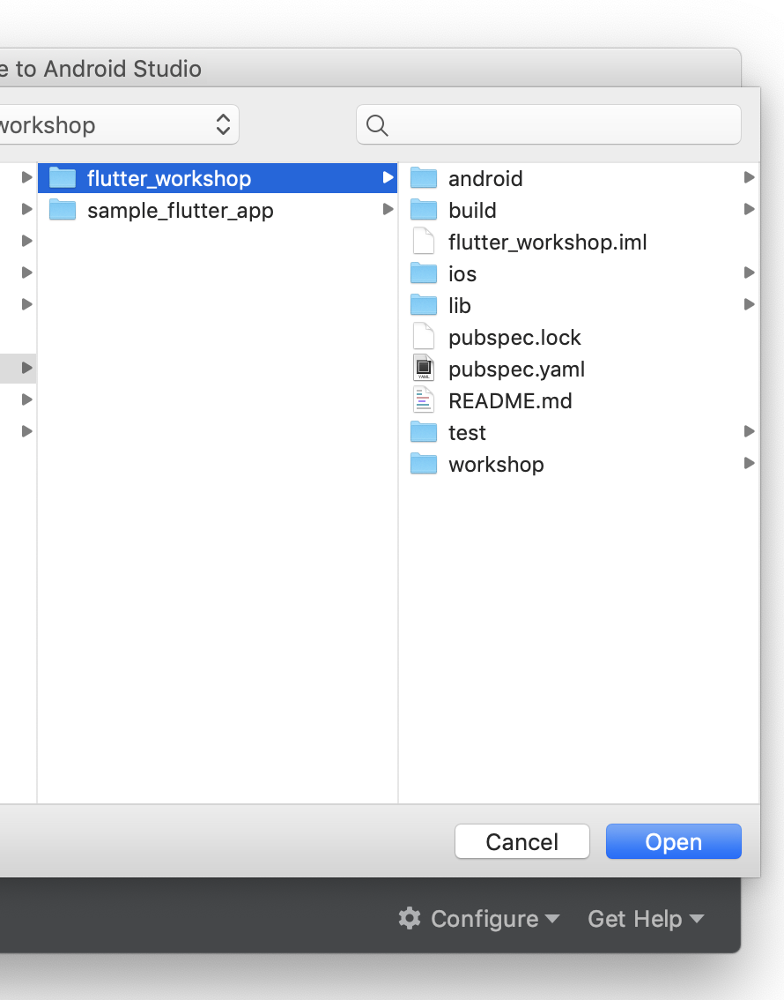
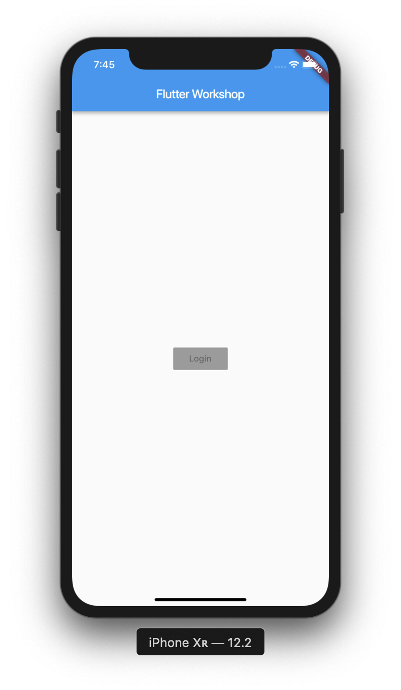
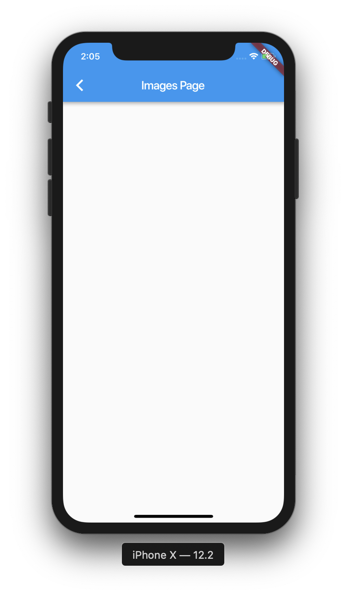

Welcome to Tikal's TechRadar Flutter Workshop
Flutter is a great Framework for beautiful apps both for Android and IOS, and in the future, for more platform.
The apps are based on a single codebase which developed in Google's Dart language.
Flutter Key Features:
- Single Codebase: Develop a beautiful mobile apps based on single codebase
- Open source: Flutter is an open source SDK
- No UI bridges: Flutter doesn't use platform OEM widgets such as TextView or RecyclerView, instead, Flutter draw all widgets directly on device canvas. No bridges are used.
- Dart - Dart is an object oriented language which utilise modern programming paradigms such as asynchronous
Future<>, await,StreamsandListeners
- Use JIT compiler for debug and AOT for production - Google Support - Flutter developed and supported by Google
- Great Documentation - Flutter has reach and detailed documentation
What you will build:
In this workshop - codelab you will learn to install and setup Flutter environment, create your first app, learn the basic concepts of Flutter such as Widget, Context and State
Your app will:
- Contain two pages - a Login page and an Images page
- Download and show images from the internet
- Use the Flutter
Navigatorto move between pages

What you will learn:
- Flutter building blocks -
StatelessandStatefulwidgets - Get familiar with
ContextandState - Build UI
- Handle click events and use Navigator to move between pages
- Learn the Dart programming language
- Extract the package into a selected folder:
$HOME/development/Flutter - Add the
Flutter/binpath to your system$PATHenv' variable
On a Mac, open your ~/.bash.profile and add the following line:
PATH=$PATH:$HOME/Development/flutter/bin/cache/dart-sdk/bin:
$HOME/Library/Android/sdk/platform-tools:
$HOME/Development/flutter/bin- Once your $PATH is updated, open a new Terminal and write the following command:
flutter doctor
- Flutter doctor helps us to complete the environment setup
- Proceed to IDE installation
- Follow Android Studio wizard to complete Android Studio installation
- Installation is complete, open Android Studio
- In the welcome screen, Plugin from the Configure bottom right menu:

- Install the Flutter and Dart plugins:
- Run flutter doctor command again, follow instructions until you will get [✓] for Android part
 

Create New Flutter Project
- Restart Android Studio
- In the welcome Screen Select: Create new Flutter Project
- In the next screen select Flutter Application
- Set project name and location
- Next, Enable Kotlin and Swift Support
- Complete the project initialization

What you will do here:
- Create Android emulator
- Run Flutter app from IDE
- Run flutter app from command line
- Explore Flutter project structure
- Experience hot reload
Explore Flutter Project Structure
Create an Android Emulator
- Click on the AVD manager icon: 
- Click on
+Create Virtual Devicebutton

- Select the default emulator and click
Next
- Select a System Image, download it if required (Recommended for this tutorial, 27 - Oreo)

- Continue to Configuration, set the emulator name,
- Click Finish.
- Click the run button to start the emulator
Run the default app
- Run the app from the Run icon
- This is the Flutter default demonstration app
- Check out the counter button operation
- In the project file, under the
MaterialAppmodify the theme color from blue to green - Press Ctrl+S to save, this will do Hot Reload, notice the color change on the screen.
Run the App from the command line
- Stop the app from the Stop button
- Open IDE terminal
- Write command
flutter run -d all - Wait for the app to run
- Change the
_counter++to decrement_counter--(on line 59) - In the terminal, press
rto do hot reload, press the + button, the counter should now decrement.
What you will do here:
- Create the project Application root
- Learn about the MaterialApp Widget
- Create the main function which is the entry point of the app
- Run Flutter app from the command line
Get Project Source Code
The code for this workshop is available on GitHub:
Or you can clone the project:
- Open a terminal on your workspace directory, e.g.
~/HOME/Development/Projects - Clone the project source code:
git clone https://github.com/moti0375/flutter_workshopOpen Workshop Project
- Open Android Studio
- Close all projects
- In the welcome screen select
Open an existing Android Studio Project

- Select the cloned project directory and click
Open

- The workshop project should be opened.
Create the Application file
- Under the
libfolder, createapplication.dartfile - Open the new application file, import the
package:flutter/material.dartpackage - Create
MyAppclass and extendStatelessWidget - Override the
build()method and return aMaterialAppWidget - In the MaterialApp constructor, add
title: "Flutter Workshop" - Set the
home:argument toContainer()
import 'package:flutter/material.dart';
class MyApp extends StatelessWidget{
@override
Widget build(BuildContext context) {
return MaterialApp(
title: "Flutter workshop",
home: Container(),
);
}
}
- Under the lib folder, create a
main.dartfile - Import the material package as in section 2
- In the main file, add main() function and call the runApp function:
import 'package:flutter/material.dart';
import 'package:flutter_workshop/application.dart';
void main() => runApp(MyApp());
- Open Android Studio build in terminal, run the app by typing:
flutter run -d all
What you will do here
- Create app the app HomePage dart file
- Learn about Flutter page structure, AppBar, Scaffold and Body
- Use Flutter Hot Reload
- Learn about the Stateless Widget
Create The HomePage
- Under the lib folder, create a new
pagespackage - Inside the new
pagespackage, createhome_pagepackage - Under the home_page package, create a new
home_page.dartfile - Open the home_page.dart file, create the
HomePageclass, extendsStatelessWidget, override thebuild()method and return aContainer()
(Import the material package as necessary)
import 'package:flutter/material.dart';
class HomePage extends StatelessWidget {
@override
Widget build(BuildContext context) {
return Container();
}
}- Go back to the application.dart replace the Container() with the new HomePage()
Make import as necessary
return MaterialApp(
title: "Flutter workshop",
home: HomePage(),
);
- Do Hot Reload - In the terminal type
r, app still has black screen.
Home Page Body
- In the build method of the
HomePageclass, replace the Container() widget with aScaffold()widget
The Scaffold widget represents a Material Design page structure that can have components such as:
- App Bar
- Floating Action Button
- Bottom Navigation Bar
- Body
- Inside the Scaffold constructor, add the
appBar: AppBar() - Set the AppBar title.
title: Text("Flutter Workshop") - Inside the Scaffold constructor, under the title: argument, add the body: argument and set it to a
Center()Widget - Set the Center child: widget to Text("Hello Flutter")
appBar: AppBar(
title: Text("Flutter Workshop"),
),
body: Center(
child: Text("Hello Flutter"),
),
- Do hot reload, you should now see the homepage now:

What you will do here
|
- In the homescreen, click the Text() child widget of the Center widget, press Alt+Enter
- Select
‘Wrap with new widget'

- Rename the new widget to
RaisedButton(),
In the RaisedButton constructor, set the child: widget to Text("Login") - Add a comma after the button
Text(),press Alt+Enter to reformat the code
Notice the difference with and without the,
body: Center(
child: RaisedButton(
child: Text("Login"),
),
)- Do hot reload, notice that the button is wrapped and disabled yet, that's because we didn't set an onPressed callback. We will do it in the next following steps.

Padding and enabling
- Click on the RaisedButton, wrap it with Column as done above
- Do hot reload, the button will jump to the top of the screen, this because of the Column default behavior
- In the Column constructor, above the
children: <Widget>[]array, add the following attributes:mainAxisAlignment: MainAxisAlignment.center,
mainAxisSize: MainAxisSize.min,
crossAxisAlignment: CrossAxisAlignment.stretch, - Do hot reload, the button is now centered again and stretched to all screen width
- Let's add some padding to the button, Select the
RaisedButtonpress Alt+Enter - Select
Add padding, set the padding topadding:constEdgeInsets.all(20.0) - Do hot reload, the button should now have some padding
- Let's enable the button by adding onPressed callback
- In the button constructor, under the
child: Text(), addonPressed: (){}, - Add log statement
print("Button clicked");
child: RaisedButton(
child: Text("Login"),
onPressed: (){
print("Button Clicked");
},
), //RaisedButton- Do hot reload, the button should be enabled, click the button and watch the log messages in the console.
Styling the button and text
- In the RaisedButton constructor add a color: argument -
color: Theme.of(context).primaryColor - Set the button text color:
textColor: Theme.of(context).primaryTextTheme.button.color - Do hot reload, see the button and text color.
- Don't forget commas, press Shift+Cmd+L to reformat the code if required.
Padding(
padding: const EdgeInsets.all(20.0),
child: RaisedButton(
color: Theme.of(context).primaryColor,
textColor:Theme.of(context).primaryTextTheme.button.color,
onPressed: (){
print("Button Pressed");
}, //Don't forget the commas
child: Text("Login"), //<- Yes, this comma too :)
), //RaisedButtonWhat you will do here
- Create a new page
- Learn about the StatefulWidget and State
- Rearrange sub widgets in a page
- Download images from the network
- Use the Flutter Navigator Widget to move between pages
Add new package and page Dart file
- Under the
pagespackage, create new page package -images_page - In the new package create new dart file:
images_page.dart - In the new file, create
ImagesPageclass, extendsStatefulWidget - In the new class, override the
createState()method - In the ImagesPage, create another class
_ImagesPageStateclass that extendsState<ImagesPage> - In the State class, override the
build()method
- In the
createState()method, return a newImagesPageState()
class ImagesPage extends StatefulWidget {
@override
_ImagesPageState createState() => _ImagesPageState();
}ImagesPage body
- In the State
build()method, returnScaffold()widget. - Set an
appBar: AppBar()withtitle: Text("Images Page") - Set the page body: top widget to be Container() with padding of 8.0 points, this widget will wrap the whole page body and allows to add padding, and other decorations such as background color and border.
body: Container(
padding: const EdgeInsets.all(8.0),
)- Next, set the Container child: widget to Column()
- Set the Column attributes to:
mainAxisAlignment: MainAxisAlignment.center,
mainAxisSize: MainAxisSize.max,
crossAxisAlignment: CrossAxisAlignment.center, - Add an children: <Widget>[] array, this array will contain the column child widgets vertically.
- The Scaffold() should now looks like this:
Scaffold(
appBar: AppBar(
title: Text("Images page"),
),
body: Container(
padding: const EdgeInsets.all(8.0),
child: Column(
mainAxisSize: MainAxisSize.max,
mainAxisAlignment: MainAxisAlignment.start,
crossAxisAlignment: CrossAxisAlignment.center,
children: <Widget>[
],
),
),
);Open the ImagesPage
- In the home_page.dart file, select the Login RaisedButton
- In the onPressed: (){} callback, use the Flutter Navigator to open the new ImagesPage():
Navigator.of(context).push(MaterialRoutePage(builder: (context){ ImagesPage()}));
onPressed: () {
print("Button Pressed");
Navigator.of(context).push(
MaterialPageRoute(
builder: (context) {
ImagesPage();
},
),
);
}- Import the
ImagesPage()class, use Alt+Enter and do import - Do hot reload
ror Hot Restartshift+r - Click the login button to open the ImagesPage
- You should now see an empty screen:

What you do here
- Build the images pages UI structure
- Use the Image widget do fetch images from the internet.
- Use Row widget to place widget horizontally
- Learn to use IDE shortcuts and Outline menu to wrap and remove widgets
- Use the Padding and Expanded widgets to adjust our layout
Image Widget
- At the top of the
_ImagesPageStateclass, declare aStringmember variable:
final String _imageUrl = "https://image.tmdb.org/t/p/w500/xvx4Yhf0DVH8G4LzNISpMfFBDy2.jpg";
- Under the children widgets array, add the
Image.network()widget - Set the URL to _imageUrl variable
- Do hot reload or hot restart
Add Two Buttons
- Under the Image.network widget add a
Row()widget. - Set the Row attributes and add an empty children<Widget>[] array:
Image.network(
_imageUrl
), //Image.network
Row(
mainAxisAlignment: MainAxisAlignment.spaceEvenly,
mainAxisSize: MainAxisSize.max,
crossAxisAlignment: CrossAxisAlignment.center,
children: <Widget>[
]
), //Row Always add a comma after the last widget- In the empty <Widget>[] array add two RaisedButton widgets
- Set the first button child: to Text("Previous")
- Set the second button child: to Text("Next")
...
children: <Widget>[
RaisedButton(
child: Text("Previous"),
),
RaisedButton(
child: Text("Next"),
),
]
), //Row Always add a comma after the last widget- Do hot reload, watch the page with an image and two disabled buttons under it.
- The buttons are wrapped, let's make them stretched equally
- Select the first RaisedButton, press Alt+Enter select,
Wrap with widget - Set the widget name to
Expanded - Repeat steps 8-9 for the second button
- Do hot reload, the buttons should now be stretched horizontal equally
Add Buttons Padding
- Select the first RaisedButton, click on the Flutter Outline tab at the right side of the screen:
- Press the
Add paddingbutton - Set the padding:
padding:constEdgeInsets.all(8.0) - Repeat steps 2-3 for Second button
- Do hot reload, buttons should now have some padding,

Expanded(
child: Padding(
padding: const EdgeInsets.all(8.0),
child: RaisedButton(
child: Text("Previous"),
),
),
)Enabling the buttons
- The buttons still disabled, this because we haven't set an onPressed callback
- Inside the first buttons constructor, add onPressed: argument:
onPressed: (){}
- Repeat the last step for the second button
- Do hot reload, the buttons should be enabled and clickable
- Lets style the pbuttons
- In the first button constructor, right above the child: argument, set button color:
color: Theme.of(context).primaryColor - Next, under the color: argument, set the textColor:
textColor: Theme.of(context).primaryTextTheme.button.color
RaisedButton(
color: Theme.of(context).primaryColor
textColor: Theme.of(context).primaryTextTheme.button.color
child: .... ,
onPressed: (){}
)Extract buttons build to a method
- Let's create a method to create the buttons
- Select the Padding of the first button
- Press Command+Alt+M, ExtractMethod dialog open, set the method name to _buildButton
- Set the method return type to Widget
- Set the method to accept
BuildContext,StringandFunction() callback
Widget _buildButton( {BuildContext context, String title, Function() callback})
- Replace the RaisedButton parameters inside the method with the method arguments:
Widget _buildButton(
{BuildContext context, String title, VoidCallback callback}) {
return Padding(
padding: const EdgeInsets.symmetric(horizontal: 4),
child: RaisedButton(
color: Theme.of(context).primaryColor, //Set the context
textColor: Theme.of(context).primaryTextTheme.button.color,
child: Text(title) //Set the title,
onPressed: callback, //Set the callback
),
);- Replace the RaisedButton child in the Buttons Row by calling the _buildButton method for each button.
- At the end, the buttons Row should look like this:
children: <Widget>[
Expanded(
child: _buildButton(
context: context,
title: "Previous",
callback: () {},
),
),
Expanded(
child: _buildButton(
context: context,
title: "Next",
callback: () {},
),
),What you do here
- Add Images list
- Switch between images using the navigation buttons
- Understand the idea of State and the use setState method
- Learn IDE shortcuts for selecting and extracting code
Add Images List
- In the State class, add a list of 3 images URLs:
- Next, under the images list, add an
int index = 0;to the State class
List<String> _images = [
"https://image.tmdb.org/t/p/w500/xvx4Yhf0DVH8G4LzNISpMfFBDy2.jpg",
"https://image.tmdb.org/t/p/w500/svIDTNUoajS8dLEo7EosxvyAsgJ.jpg",
"https://image.tmdb.org/t/p/w500/iiZZdoQBEYBv6id8su7ImL0oCbD.jpg"
];
int _index = 0;- We will use the index to load an image from the list in the Image.network widget
- At the bottom of the State class, add two methods for increment and decrement
void _handleNext() {
setState(() {
index++;
});
}
void _handlePrevious() {
setState(() {
index--;
});
}- Notice that in these methods we call the
setState((){}).This method is Flutter framework that cause our widget to rebuild with the new state. - In the Image.network widget, replace the
_imageUrlwith_images[_index]
Image.network(
images[index],
fit: BoxFit.fill,
),Call Methods from buttons onPressed
- We need to prevent the user from click
Nextwhen reaching the last image in the list by setting the onPressed callback to null - We should do the same for the
Previousbutton when reaching the first image in the list. - In the ‘Next' RaisedButton, set the onPressed: callback to null as following:
_buildButton(
context: context,
title: "Next",
callback: _index < (_images.length - 1) ? () {
_handleNext();
} : null,
)- In the ‘Previous' RaisedButton, set the onPressed: callback to null as following:
_buildButton(
context: context,
title: "Previous",
callback: _index > 0 ? () {
_handlePrevious();
} : null,
)- You should now be able to navigate between images which are downloaded from the network!